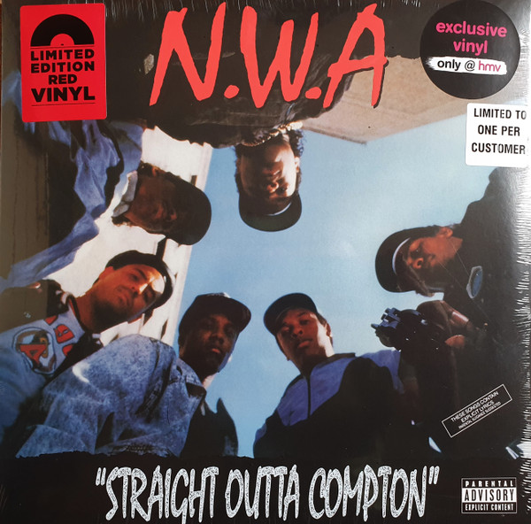
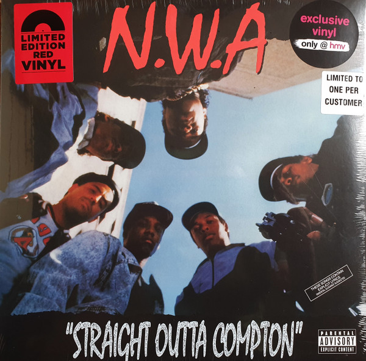

The Movement
Hip hop is a cultural genre that emerged in African-American and Latino communities in the South Bronx, New York, in the 1970s.
It encompasses a series of interconnected elements, including music, dance, fashion, and visual art, as well as a specific attitude and approach to life and creative expression.
Hip hop is characterized by its influence on the streets and urban culture, serving as a form of self-expression and protest.
Hip hop also incorporates cultural elements such as fashion, slang, and attitudes that often reflect the experiences and challenges faced by marginalized communities.
Over the decades, hip hop has expanded globally, influencing music, fashion, and popular culture worldwide.
Additionally, hip hop has played a significant role in promoting social activism and raising awareness of issues such as racism, inequality, and injustice.
Rap
Rap is more than just a musical genre; it is an artistic form of expression that emerged from the streets and the voices of the marginalized, evolving into a powerful tool for communication and social change.
Originating from urban communities in the outskirts of the United States, rap found its voice in the 1970s and quickly spread worldwide, capturing hearts and minds with its sincere lyrics and compelling beats.
If I were you, I would buy...
Straight Outta Compton
"Straight Outta Compton" is an iconic rap song released by the group N.W.A (Niggaz Wit Attitudes) in 1988. The track is also the title of the group's debut album, released in the same year.
The song is notable for its raw and direct representation of life on the streets of Compton, a suburb of Los Angeles, California, known for its violence, crime, and racial tensions.
The lyrics address issues such as police brutality, gangs, drugs, and the harsh reality of everyday life in the Compton community. The track captures the anger and discontent of N.W.A members with social conditions and injustices faced by them and other young blacks in their lives.
 

DJing
DJing is an art form that has become intrinsic to contemporary music culture.
More than just playing songs, being a DJ involves the ability to create a unique sonic narrative, manipulate tracks, and control the energy of an event, whether it's a party, a nightclub, or a music festival.
At the heart of DJing is the ability to mix songs from different genres and styles smoothly and creatively, creating a continuous and exciting listening experience for the audience.
Breakdance
Breakdance, often called "b-boying" or "b-girling," is a vibrant and expressive form of dance that originated as part of the hip-hop cultural movement in the streets of New York in the 1970s.
With its unique combination of acrobatic movements, rhythm, and individual style, breakdance has become one of the most recognized and appreciated disciplines of hip-hop culture.
Breakdance is much more than simply performing physical movements; it is a form of self-expression. Dancers incorporate their style, personality, and unique energy into each performance. They compete in dance battles, where they showcase their skills, creativity, and stage presence.
Turn on the sound for the Break!
Graffiti
Graffiti, often considered a rebellious and vibrant form of artistic expression, is a cultural manifestation that transcends the boundaries between art, protest, and identity. Originating from urban streets and marginalized communities, graffiti has emerged as a visual voice that challenges social norms, making a bold and colorful statement.
At the core of graffiti is the idea of taking public spaces and turning them into blank canvases to tell stories, express emotions, and convey messages. Unlike traditional art confined to galleries, graffiti invades public space, creating a direct dialogue with people who encounter it in their everyday environments.
Graffiti artists, known as "writers" or "graffiti artists," employ a variety of techniques, styles, and materials to create their works. From bold tags and stylized letters to elaborate murals and detailed images, graffiti spans a wide range of visual forms. City walls, train carriages, and even abandoned buildings become improvised canvases where stories are told and visions are shared.
Now it's your turn!
.png)